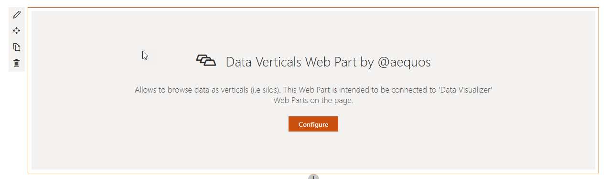
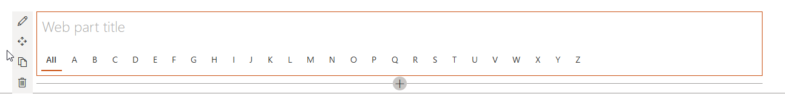
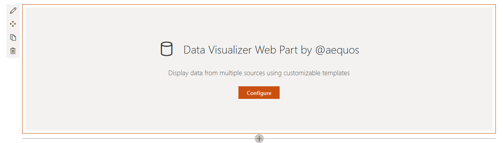
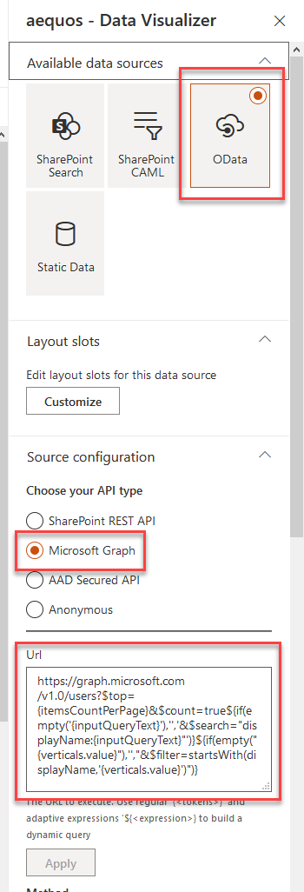
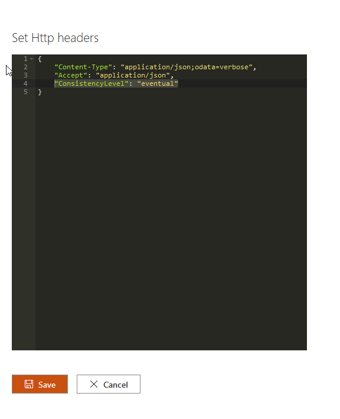
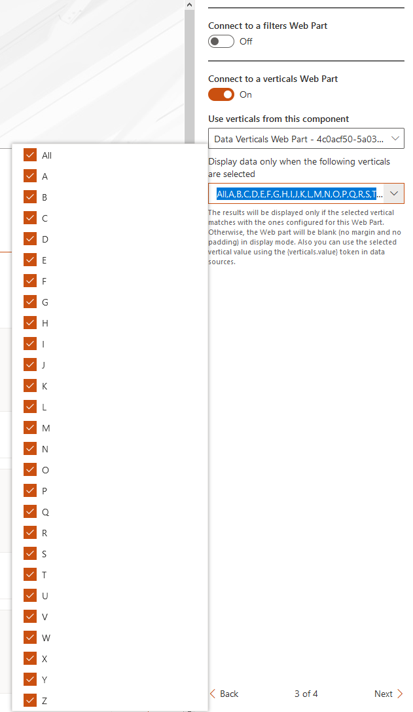

Build a people directory using alphabetical verticals, SharePoint Search data source and adaptive expressions¶
A classic use case in a SharePoint portal. This time, instead of using the SharePoint search data source, we use the Microsoft Graph and the People API to lookup relevant people based on search box Web Part input keywords. We also add alphabetical filters as verticals and take advantage of the adaptive expressions feature to write a dynamic query.
Questions, issues with this tutorial?
If you encouter issues or have questions about this tutorial don't hesitate to reach us using our official GitHub repository.
Video tutorial¶
Step-by-step tutorial¶
-
Add the 'Search Box' Web Part on the page.

-
Add the 'Data Verticals' Web Part on the page.

-
For each alphabetical letter, add and configure a new vertical. As the value use
<Letter>. ExampleAfor letter 'A'. You can also add an 'All' tab with an empty value.

-
Add a new 'Data Visualizer' Web Part on the page.

-
Select the 'OData' data source and then 'Microsoft Graph'.

-
Enter the following query and press 'Apply':
https://graph.microsoft.com/v1.0/users?$top={itemsCountPerPage}&$count=true${if(empty('{inputQueryText}'),'','&$search="displayName:{inputQueryText}"')}${if(empty("{verticals.value}"),'',"&$filter=startsWith(displayName,'{verticals.value}')")}Explanations:
https://graph.microsoft.com/v1.0/users: Microsoft graph endpoint to retreive users from Azure Active Directory.?$top={itemsCountPerPage}: Limits the number of results dynamically according the the number configured in the Web Part ({itemsCountPerPage}).&$count=true: Returns the number of total results for the query (not the same as the current number of displayed results).${if(empty('{inputQueryText}'),'','&$search="displayName:{inputQueryText}"')}: Adaptive expression to conditionally add thesearch=parameter if the input query text is not empty. Making a request with an empty text will fail otherwise. This conditions is here to cover the All scenario in verticals tab.${if(empty("{verticals.value}"),'',"&$filter=startsWith(displayName,'{verticals.value}')")}: Adaptive expression to conditionally filter on the current selected vertical tab value if present (for instance when 'A' is selected, only filter users with the display name starts with 'A').
-
In the 'Headers' option, add the value
"ConsistencyLevel": "eventual"to HTTP headers. This is needed by the Microsoft Graph API to get the count correctly:
-
In the 'Connections' property pane configuration page
-
Connect the 'Search Box' Web Part:

-
Connect the 'Data Verticals' Web Part previously added. Select all the available tabs (i.e. letters). Basically it tells the Data Visualizer Web Part to be or remain visible when user clicks on any of these letters.

-
-
In 'Layouts' property pane configuration page, select the 'People' layout.

Optionally, in the layout options, you can check 'Show persona card on hover' option. To get it work, an administrator needs to approve required API permissions.
-
Save your page. You can now filter people based on alphabetical letters using their first name or view all users.